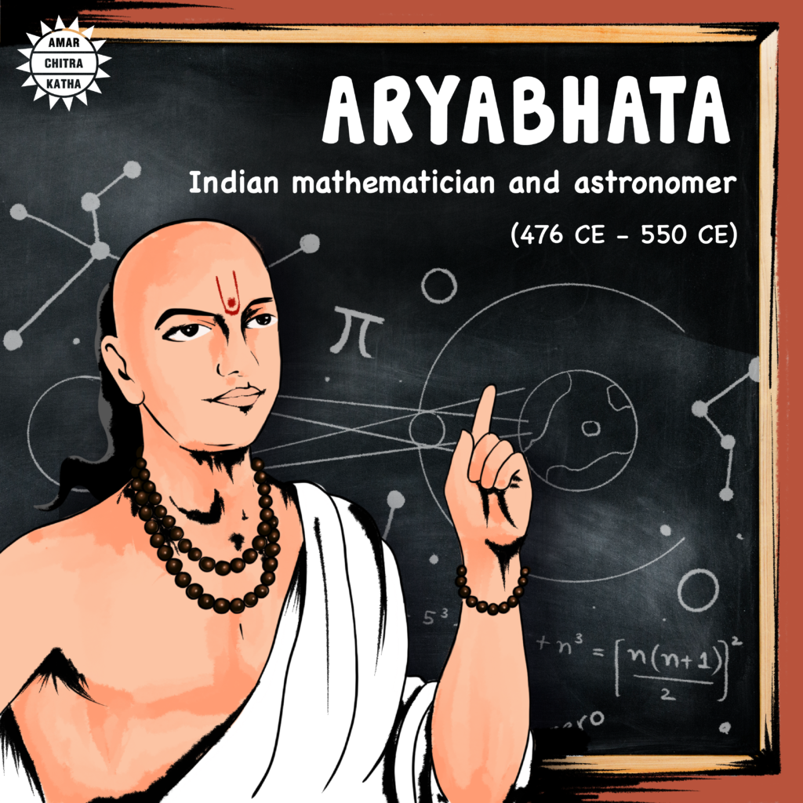

Mathematician Aryabhata
Aryabhata (476–550 CE) was one of the greatest mathematicians and astronomers of ancient India. He made significant contributions to mathematics and science, and his works are highly regarded even today.
Key Information About Aryabhata 1. Early Life Birth: Aryabhata was born in 476 CE in Kusumapura (modern-day Patna, Bihar, India). Education: He is believed to have studied at Nalanda University, a prominent center of learning at the time. 2. Major Works Aryabhata wrote several works, but his most famous is the Aryabhatiya, a comprehensive text on mathematics and astronomy, written in Sanskrit. The Aryabhatiya consists of 121 verses divided into four sections: Gitikapada - Large units of time, including planetary revolutions. Ganitapada - Mathematical concepts and calculations. Kalakriyapada - Calendrical calculations. Golapada - Spherical astronomy. 3. Contributions to Mathematics Place Value System and Zero: Aryabhata used the concept of zero in his place value system, which was later refined in Indian mathematics. Approximation of Pi (π): Aryabhata calculated the value of pi as 𝜋 ≈ 3.1416 π≈3.1416, stating that it is an irrational number. Trigonometry: He introduced trigonometric functions like sine, cosine, and their relationships. Algebra: He solved quadratic equations and discussed indeterminate equations. 4. Contributions to Astronomy Aryabhata proposed that the Earth rotates on its axis, explaining the apparent movement of stars. He accurately calculated the duration of a day as 23 hours, 56 minutes, and 4.1 seconds. He explained lunar and solar eclipses scientifically, attributing them to the shadows cast by Earth and the Moon. 5. Legacy Aryabhata's contributions influenced later Indian mathematicians such as Brahmagupta and Bhaskara. His works were translated into Arabic and influenced Islamic and European scholars. India's first satellite, Aryabhata, launched in 1975, was named in his honor. Interesting Facts Aryabhata referred to himself as a "Kusumapura resident," hinting at the city being a hub for learning. He explained that the moon and planets shine because they reflect sunlight, an idea far ahead of his time. His system of denoting large numbers was innovative, using Sanskrit letters to represent digits. Conclusion Aryabhata’s groundbreaking contributions laid the foundation for many mathematical and astronomical concepts. His works showcase the brilliance of ancient Indian science and continue to inspire mathematicians and scientists worldwide.